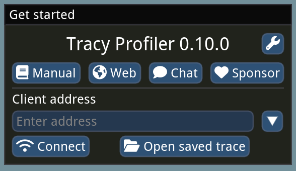
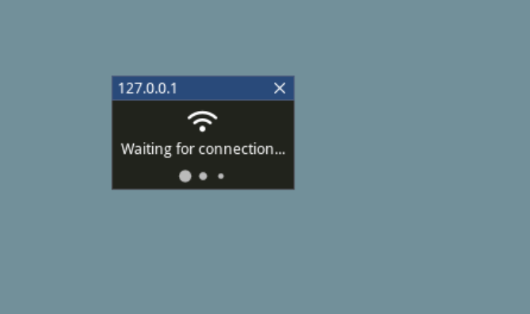
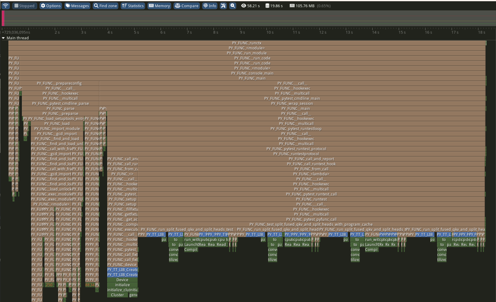
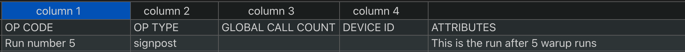
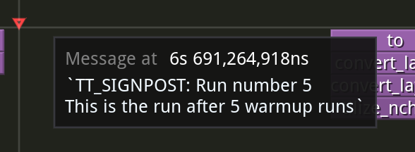

Tracy Profiler
Note
Tools are only fully supported on source builds.
Profiling is an essential part of software development that helps developers gain insight into how their code executes, where time is spent, and which parts of the system may be causing performance bottlenecks. By collecting and analyzing detailed runtime data, profiling tools enable developers to identify inefficient code paths, understand resource usage, and make informed decisions about where to focus optimization efforts. Effective profiling is key to improving performance.
Overview
Tracy is an open-source C++ profiling tool with sampling and code-instrumentation capabilities. Metalium uses a fork for Tracy adapted to the Tensix processors as its primary profiling tool.
Detailed documentation about Tracy itself can be found here: https://github.com/wolfpld/tracy/releases/latest/download/tracy.pdf. Reading the Quick-start guide section can help with the rest of this documentation.
All host-side code, including python code in tt_metal can be profiled using Tracy.
Enabling Tracy
Tracy profiling support is enabled by default when building Metalium. Simply run:
# Via build script
./build_metal.sh
# Or via CMake flags
cmake . -DENABLE_TRACY=ON
ninja
ninja install
Debug-verbosity zones are off by default and gated behind opt-in categories.
Build with one or more (comma-separated), or all for every zone; see
./build_metal.sh --help for the list:
# Via build script
./build_metal.sh --build-perf-debug dispatch,program
# Or via CMake flags
cmake -B build -DENABLE_TRACY=ON -DTRACY_DEBUG_CATEGORY=dispatch,program
ninja -C build
ninja -C build install
The selection is cached and persists across builds until changed;
--build-perf-debug off disables it.
To instrument code, tag a zone with a TTZone*D macro whose first argument is
the category as an upper-snake token (rt-profiler -> RT_PROFILER), e.g.
TTZoneScopedD(DISPATCH) or TTZoneScopedDN(RT_PROFILER, "name"). A zone
whose category is not selected compiles out.
GUI
Tracy provides a GUI application for viewing profiling results. You can open saved profiling sessions or connect to a remote machine to view real-time profiling data, as long as network access to the remote system is available.
Web GUI (WASM)
After a successful python -m tracy profiling run with the default Tracy capture flow , Metalium automatically starts the Tracy WASM web viewer in the background.
When the server starts, the console logs print the suggested HTTP URL (open in a browser).
By default the HTTP server listens on 8080. To use a different HTTP port, pass --web-app-port <port>.
In addition to the HTTP port, a WebSocket is used for live refresh on port P+1 (one above the chosen HTTP port P).
Remote host (SSH)
If the WASM server runs on a remote machine (for example after python -m tracy on a lab host) but you open the viewer in a browser on your local machine, you must forward both the HTTP port and the WebSocket port. With the defaults 8080 and 8081, SSH must tunnel local ports to the same ports on the remote loopback interface where the server is listening.
Add matching LocalForward lines to your ~/.ssh/config (or pass equivalent -L flags on the command line). Example for default ports:
Host my-tt-metal-host
HostName lab.example.com
User you
# Tracy WASM: HTTP and WebSocket (live refresh)
LocalForward 8080 127.0.0.1:8080
LocalForward 8081 127.0.0.1:8081
Connect with ssh my-tt-metal-host, then open http://127.0.0.1:8080/ in a local browser. If you change the HTTP port with --web-app-port, forward that port and P+1 the same way.
Installing for Mac users
Mac users can install Tracy using Homebrew. Open a terminal and run:
brew tap tenstorrent/tools
brew update
brew install tenstorrent/tools/tracy
For further installation options, refer to https://github.com/tenstorrent/homebrew-tools.
After installation, start the Tracy GUI with:
tracy
Building for Linux users
For Linux users, you need to build the Tracy GUI from source. First, clone the Tracy repository.
git clone https://github.com/tenstorrent/tracy.git
cd tracy/profiler/build/unix
make -j8
A Tracy-release binary will be generated in the current directory after the build completes. You can run it directly from there or copy it to a directory in your PATH for easier access
./Tracy-release
Starting the GUI
The application will start showing a window similar to the image below.
{kind=link}

Capturing Profiling Data
Set the client address to the IP address of the remote machine and port 8086 (e.g. 172.27.28.132:8086), then click connect.
A “Waiting for connection …” dialog will appear after clicking connect.

When the host machine starts running a tracy-enabled application, the GUI will automatically collect profiling data and display it in real time.
Counterintuitively, the Tracy GUI connects as a TCP server, while the profiled application runs as a TCP client, usually connecting to port 8086. If your application host is on a different network than the Tracy GUI, you may need to set up port forwarding or a VPN connection. SSH port forwarding is a common solution:
ssh -NL 8086:127.0.0.1:8086 user@remote-machine
Capturing via Command Line
Alternatively, use the tracy-capture CLI tool built under tt-metal when Tracy is enabled, at tt-metal/build/tools/profiler/bin/tracy-capture. This tool acts as a client that saves the profile to disk, which can then be copied and loaded into the GUI later. To use it, run the following command before starting the application:
./build/tools/profiler/bin/tracy-capture -o output_file_name.tracy
Note
The output of tracy-capture is quite compressible. For large profile files, it is recommended to compress them before transferring over the network. You can use the -z option with rsync, -C with scp, or standalone tools like gzip or zstd.
Profiling Host Code
C++
With Tracy enabled in the Metalium build, all C++ marked zones will be profiled. Zones in Tracy are marked sections of code that users are interested in profiling. Tracy provides macros such as ZoneScoped; to accomplish this.
Please refer to section 3 of Tracy’s documentation for further information on zones and available macros.
The following image is a snapshot of Tracy C++ profiling:

For example, the Device constructor shown above is instrumented as follows:
Device::Device(ChipId device_id, const std::vector<uint32_t>& l1_bank_remap) : id_(device_id)
{
ZoneScoped;
this->initialize(l1_bank_remap);
}
Python
Python provides the standard sys.setprofile and sys.settrace functions for tracing and profiling Python code. These are used to integrate Python profiling with Tracy.
There are several ways to profile Python code with Tracy in Metalium projects.
Python Scripts
To profile an entire Python script, run your program using the tracy module as follows:
python -m tracy {test_script}.py
Pytest Sessions
For pytest-based tests, import pytest as a module and pass its arguments as needed. For example, to profile a BERT unit test, run:
python -m tracy -m pytest models/experimental/bert_large_performant/unit_tests/test_bert_large_split_and_transform_qkv_heads.py::test_split_query_key_value_and_split_heads_with_program_cache

Instrumenting Python Code
Instrumentation can also be done without using the pytest fixture.
The following shows how to profile a function called function_under_test and all of its child python function calls by manually enabling tracy profiler.
def function_under_test():
child_function_1()
child_function_2()
from tracy import Profiler
profiler = Profiler()
profiler.enable()
function_under_test()
profiler.disable()
Similar to the pytest setup, calling the parent script with -p option will profile the region where profiler is enabled.
Note, it is recommended to sandwich the function call between the enable and disable calls rather than having them as first and last calls in the function being profiled. As settrace and setprofile trigger on more relevant events when the setup is done previous to the function call.
Signposts in Python Code
signpost(header, message) from the tracy module can be placed anywhere in the code path for your test. This call will produce a row in the op report CSV and a message in the tracy run.
from tracy import signpost
signpost(header="Run number 5", message="This is the run after 5 warmup runs")
run_inference()
signpost(header="Run result post proc")
post_proc()
The above example will show up as follows.
Op report CSV

Tracy run

Line-level Profiling
In some cases, significant duration of a function, does not get broken down to smaller child calls with explainable durations. This is usually either due to inline work that is
not wrapped inside a function or a call to a function that is defined as part of a shared object. For example, pytorch function calls do not come in as native python calls and will not generate python call events.
Line-level profiling is only provided with partial profiling because it produces substantially more data.
Add -l option to enable line-level profiling:
python -m tracy -p -l -m pytest models/experimental/bert_large_performant/unit_tests/test_bert_large_split_and_transform_qkv_heads.py::test_split_query_key_value_and_split_heads_with_program_cache
Profiling Device Code
The version of Tracy used in Metalium supports profiling device-side code, including individual Baby RISC-V cores on each Tensix and other tiles on the NoC.
For more details on device-side profiling with Tracy, see Device Program Profiler.